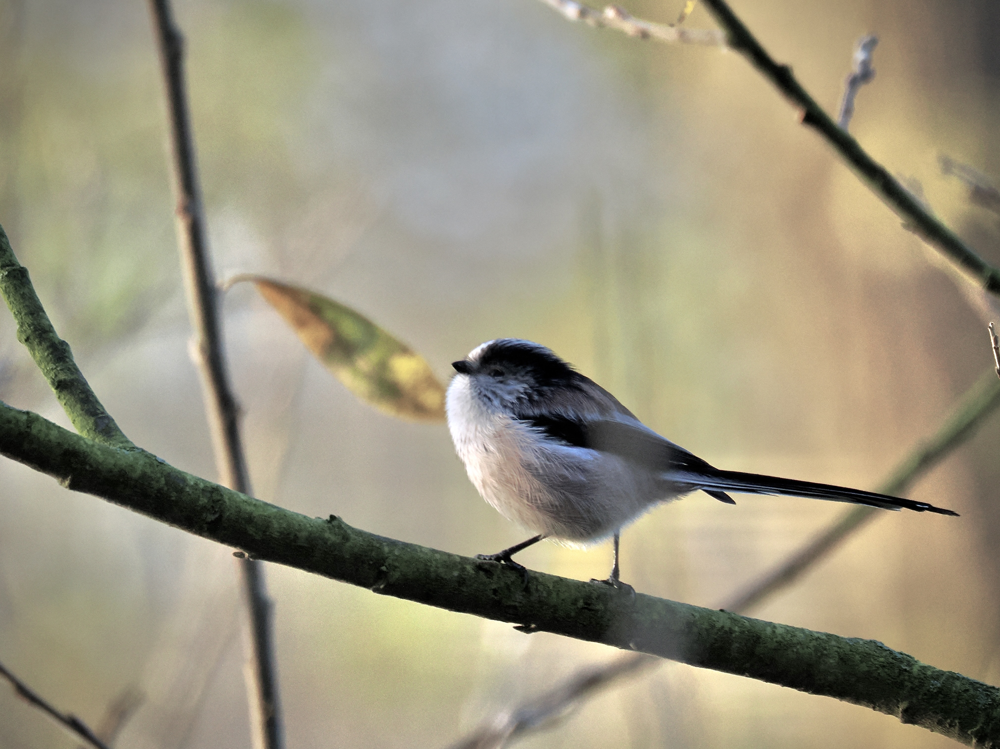
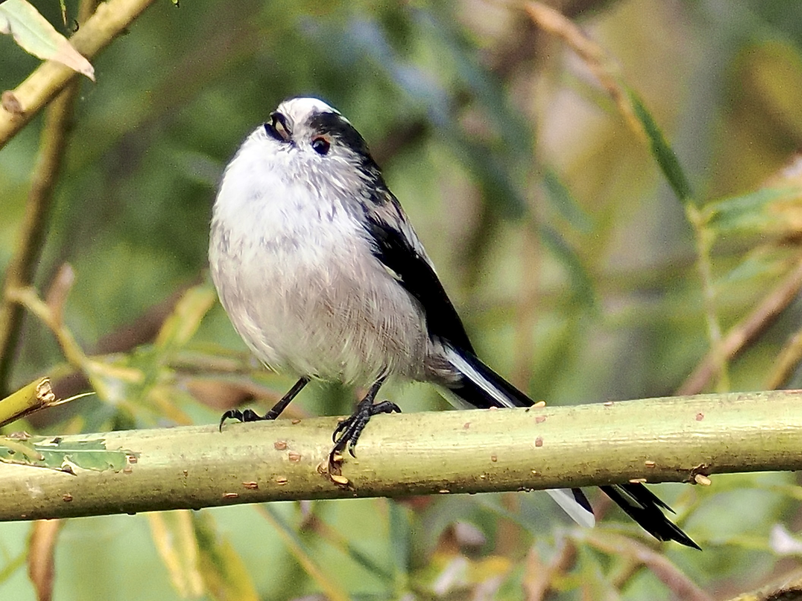
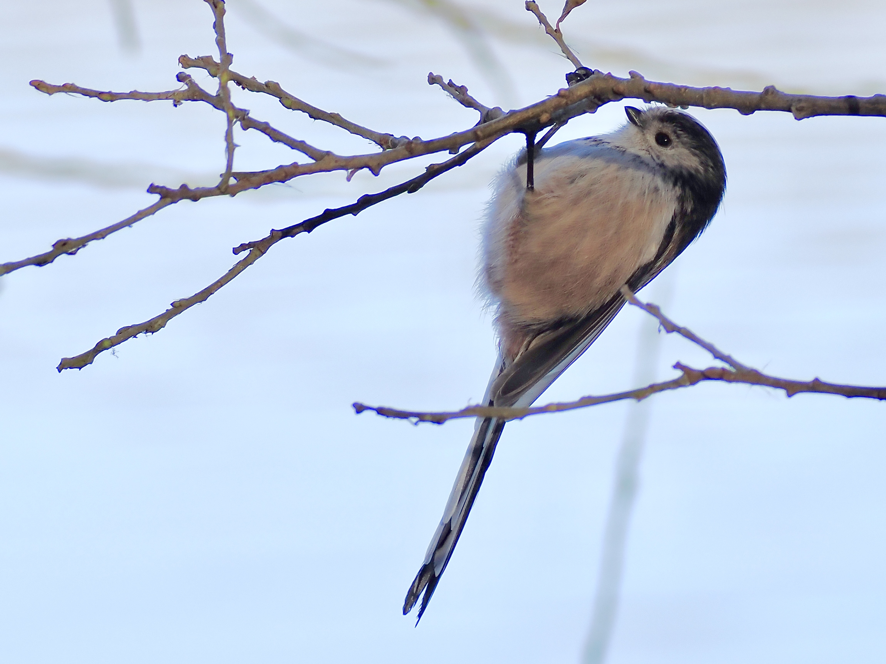

Long-Tailed Tit
Aegithalos caudatus
Order: Passeriformes
Family: Aegithalidae

A small ball of joy. Has black back and tail with some pink and white littered in. If one looks closely, the eyelid colour ranges from yellow to red. Not a real tit (family Paridae) though! The europaeus group has a dark eyebrow, while the caudatus group has an all-white head.

A very social species, found in flocks that call regularly to each other. Even bird ringers release them in groups after ringing! It even engages in cooperative breeding, where parents of failed nests help raise chicks of another pair, increasing the survival rate of the young.

In Japan, this bird is called the "shima-enaga", meaning the snow-fairy. I totally understand the reason for its popularity. Many people, including myself, have been wooed by the concept of a small round bird with a long tail. Then should I take this opportunity to mention other equally cute but less known species, such as Bearded Reedling, Vinous-Throated Parrotbill, and other members of Aegithalidae.